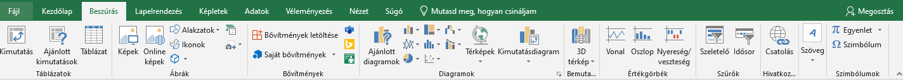
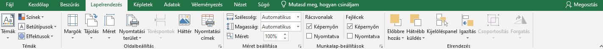
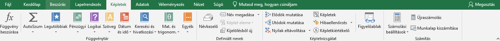
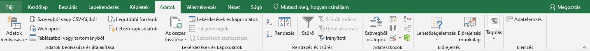

A kezdőlapot átbeszéltük de térjünk ki a többi oldal hasznos funkcióira is.
A fájl lapra kattintva egy új ablak nyílik, a többi Microsoft programhoz hasonlóan a mentés funkcióit találjuk itt.
A beszúrás lap

Leghasznosabb funkciói a kimutatások, különböző diagramok beszúrása

Lapelrendezésnél a margókat, tájolást, nyomtatási beállításokat találjuk.

A képleteknél a leggyakrabban használt képleteket találjuk kategóriánként szétszedve.

Az adatoknál találjuk a lekérdezések beállításait valamint a rendezést a szűrést és a táblázatba kívánt adatokat tudjuk beolvasni ha van már egy forrásunk.